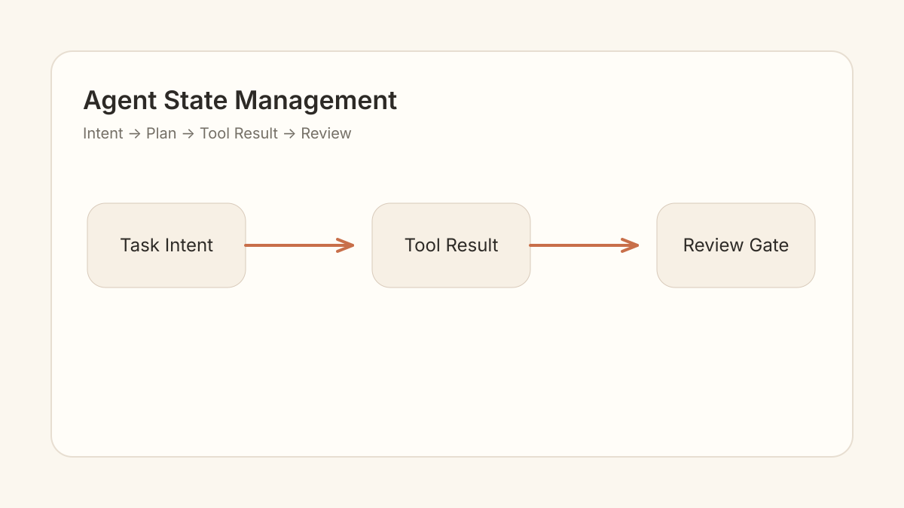
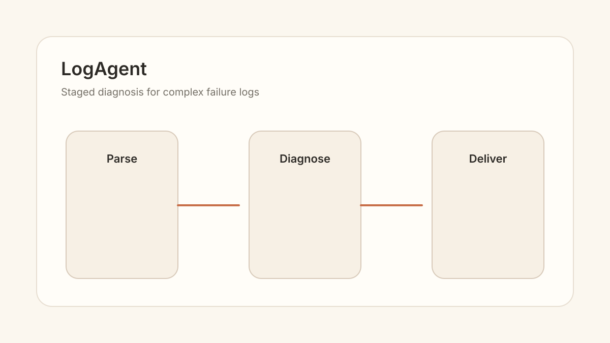

从状态视角重看 Agent 系统设计
把 Agent 问题拆成状态、转换和边界条件，通常比直接谈 Prompt 更稳定。
AgentLangGraph
Home Layout Prototypes
这份原型只用于比较首页信息架构和卡片节奏。视觉基调沿用当前站点：暖色纸面、细边框、柔和卡片、低噪声排版。
Scheme A
首页第一内容区优先服务长期写作：左侧是 Blog 主卡与次级文章，右侧保持个人卡片。Projects 独立下沉，视觉更稳。
最新
把技术文章、论文阅读和工程思考统一放在一个入口。

把 Agent 问题拆成状态、转换和边界条件，通常比直接谈 Prompt 更稳定。
如果没有稳定的评测切面，很多 Agent 改动都不可验证。
研究笔记需要回到任务定义、数据条件与失效模式。
Scheme B
三列同时展示 Blog、Projects、Focus/Life。它最大化宽屏利用，适合想让首屏下方马上出现大量入口的版本。
最新
把 Agent 问题拆成状态、转换和边界条件。
改动需要评测切面支撑。
从模型结果回到任务定义。
精选
双语、内容集合和静态部署的长期个人站点。
多阶段 Agent 诊断流程与真实失败类型评估。
Scheme C
推荐方向。Blog 作为第一内容区，Projects 以横向卡片独立展示，高度更稳定，也更像个人 Blog + 作品集。
最新
主卡保留封面，小卡不放图，控制高度波动。
把 Agent 问题拆成状态、转换和边界条件，通常比直接谈 Prompt 更稳定。
如果没有稳定评测，很多 Agent 改动不可验证。
研究笔记需要回到任务定义、数据条件与失效模式。
把失败样本变成可复盘的系统输入。
真正困难的是选择、压缩和评估。
精选
项目用横向卡片，图片比例固定，文本区域更容易对齐。
围绕内容、双语和静态部署，搭建一个能长期维护的个人研究主页。

把日志诊断拆成分阶段 Agent 流程，并通过评测回看真实失败类型。
Scheme D
首页更像一个长期知识库索引，减少图片和展示感，全部用稳定列表卡片，扫描效率最高。
Agent / LLM Research & Building
一个更像工作台的首页：短介绍，随后直接进入各类内容索引。
Latest
状态、转换和边界条件。
稳定评测切面比感觉更可靠。
从模型结果回到任务定义。
失败样本如何沉淀为评测集。
Featured
双语内容、静态部署、长期维护。
多阶段 Agent 诊断流程。
把主观修补变成可评估迭代。